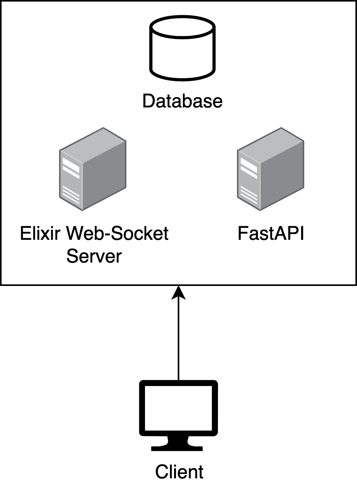

Architecture¶
Ilo is powered predominantly by two of the below technologies.
- Python - FastAPI
- Elixir - CowBoy
The above technologies are combined in an encapsulated manner, much as showcased below.

Python ¶
Python handles all the 'business' end of the platform. Such as the creation of users or the validation of API keys.
The Python backend is created using FastAPI. FastAPI is a high-performance web framework built on Starlette and Pydantic.
Elixir ¶
Elixir is referenced as Potion within the system. Potion is used as a WebServer for the sending of messages. Elixir is a functional programming language that specialises in concurrency and fault-tolerant systems. The WebSocket server is created using CowBoy.
A room is used to refer to a url identifier after the /ws/.... For example, a room for the connection 62.3.11.253/ws/PythonProgramming would be PythonProgramming. Each room has an isolated WebSocket connection, and users connected to a different room do not receive the messages of another room.
Project layout¶
The general folder structure can be seen below.
.
├── LICENSE
├── docs # All documentation is stored here
│ ├── docs
│ │ ├── css # CSS for documentation
│ │ ├── img # Images used in documentation
│ │ └── js # JavaScript used in documentation
│ └── mkdocs.yml # Configuration file for documentation
├── elixir # Potion system
├── python # FastAPI
│ ├── Config.py # Empty class for storing general_config
│ ├── Helper.py # Helper functions used in this system
│ ├── app.py # 'main' FastAPI startup file
│ ├── client # Folder containing legacy reference client
│ ├── models.py # Contains models used by FastAPI
│ ├── py_client # Tkinter reference client
│ ├── requirements.txt # Used by pip to install required packages
│ ├── routers # Contains separated routers used by FastAPI
│ ├── run.sh # Bash script to run with localhost SSL Certs
Additonal Information¶
Password Hashing¶
Passwords are hashed using Argon2id by FastAPI and are stored in their hashed state.